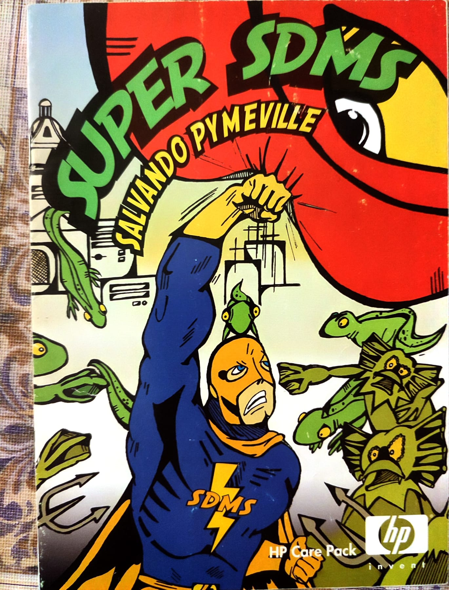

Super SDMS – HP Antivirus Comic
Promotional comic for Hewlett‑Packard about cybersecurity, told as a superhero story.

Project 2 – Web Experience
Interactive concept blending UI, storytelling and modern front‑end development.

Illustrations & Visual Experiments
Sketches, characters and visual explorations that feed future digital projects.